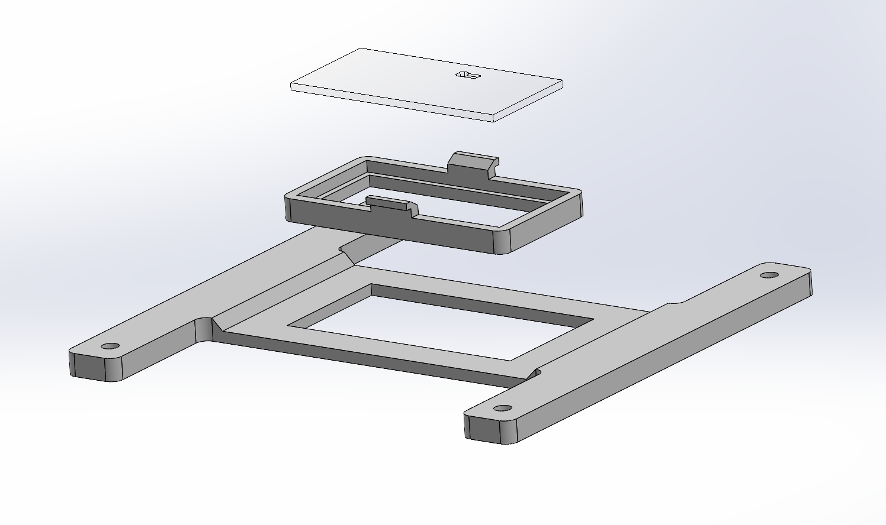
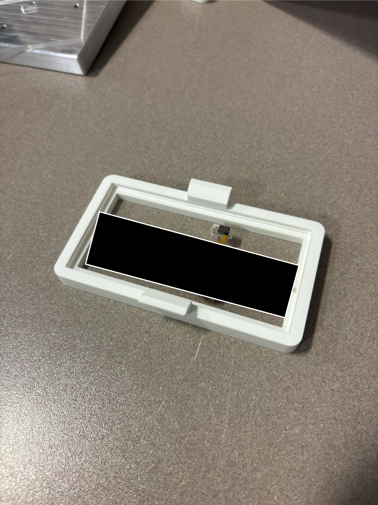
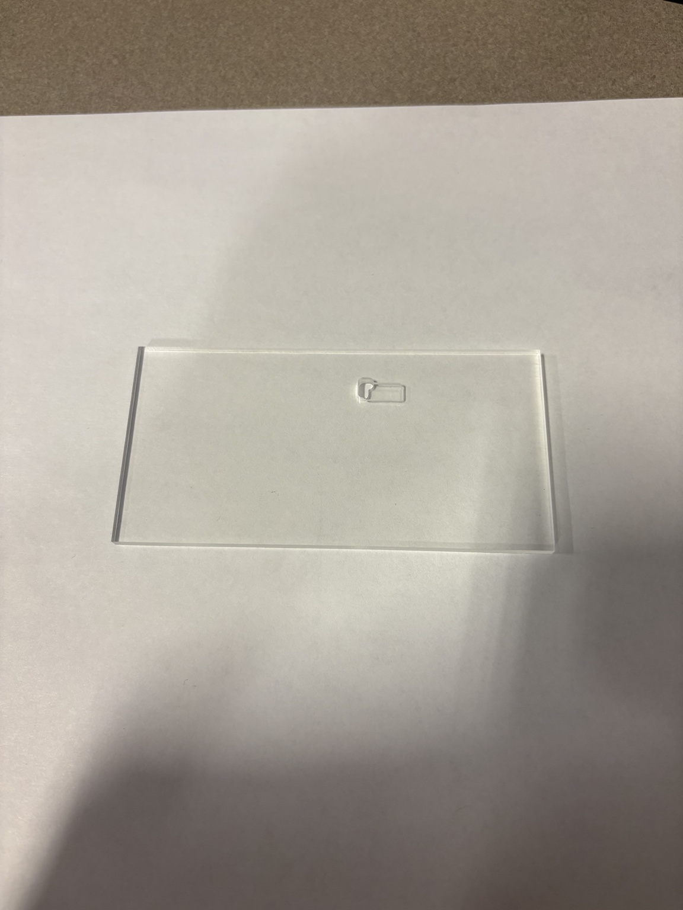
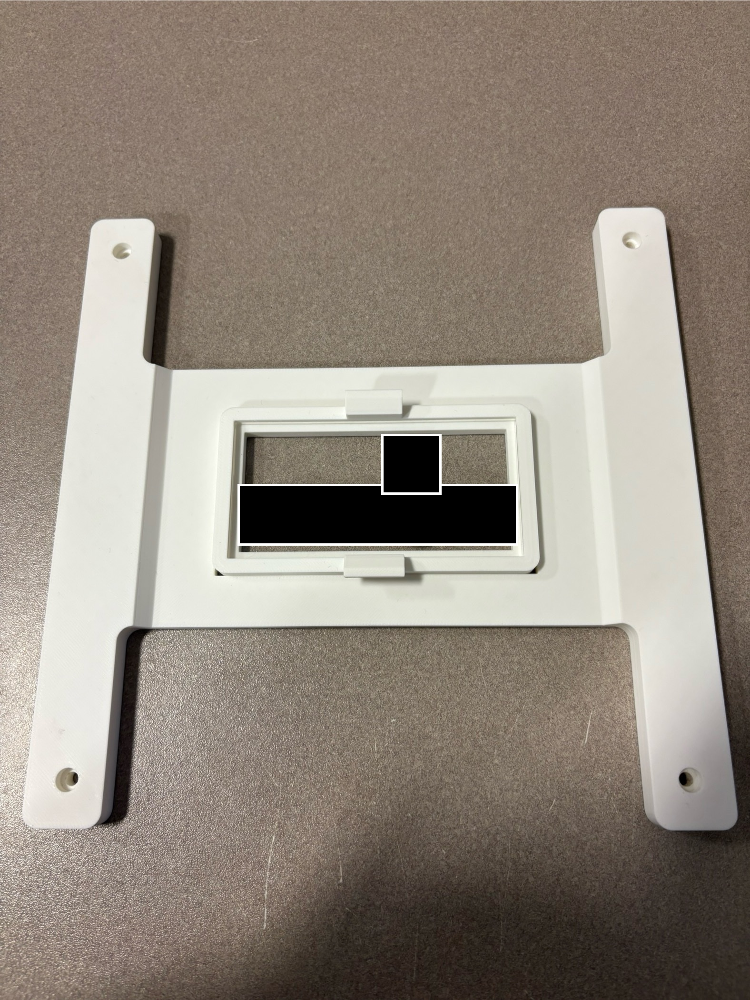
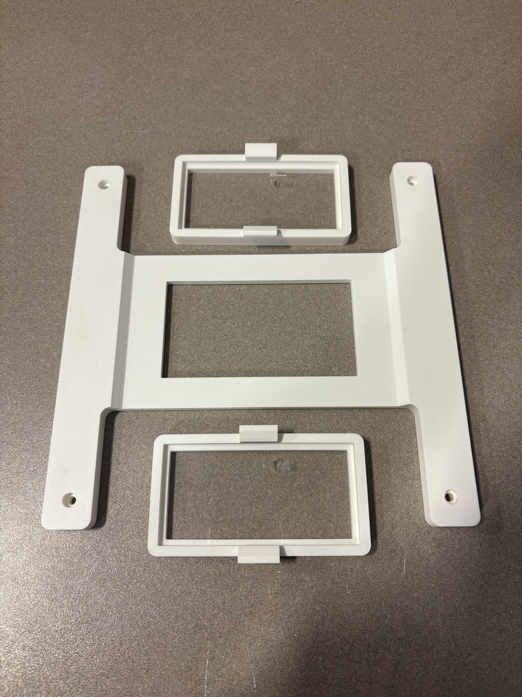
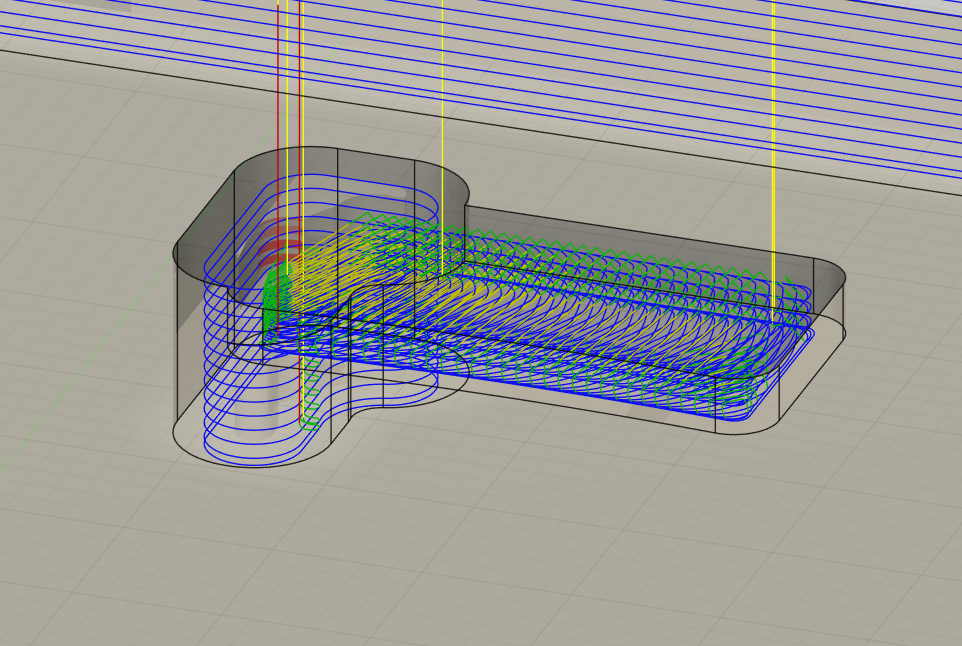
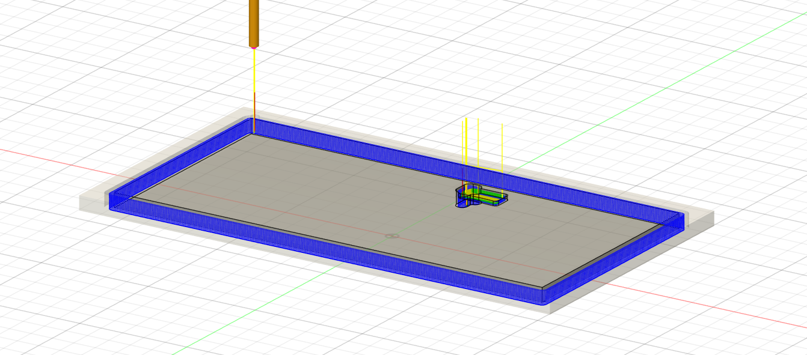
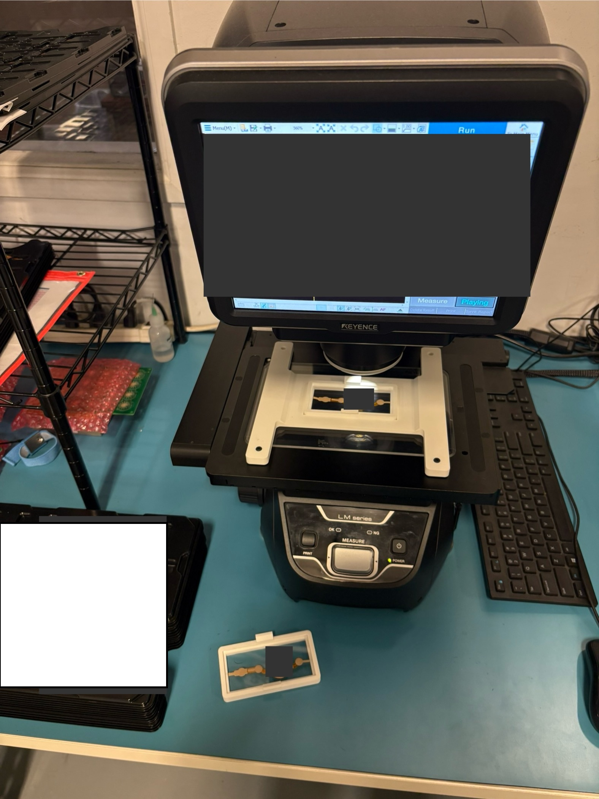

Fixture Design • Metrology • Process Improvement
Modular Fixture System for Optical Measurement
Designed a modular fixture system for repeatable positioning of small electronic assemblies on an optical measurement system while reducing board-change downtime between scans.


01
Problem
Small electronic assemblies were being inspected on an optical measurement system. Between scans, the operator had to remove the previous board, load the next one, and reposition the fixture before the next measurement cycle could begin.
The changeover created roughly 20 seconds of machine downtime per board. The goal was to reduce that handling time while maintaining repeatable fixture positioning between scans.
02
Board Fixture
I designed a board-specific fixture that located the small assembly while keeping the measurement area unobstructed.
The fixture combined a 3D-printed frame with a clear machined acrylic insert, allowing the part to be retained while preserving optical access through the measurement area.


03
Modular Base
To eliminate repeated setup time, I designed a second fixture that remained located on the measurement stage and accepted the smaller board-specific fixtures.
This created a standardized interface between the machine and multiple part-specific fixtures. The next board could be prepared away from the machine, then the entire fixture could be placed back into the same indexed position after the previous scan.


04
Manufacturing
The larger fixture components were produced with FDM printing, while the acrylic interface was machined on a CNC router.
I generated the acrylic machining strategy in Fusion 360 and used separate toolpaths to rough and finish the geometry while maintaining the clear optical area required by the fixture.


05
In Use
With the locating base fixed on the optical measurement stage, the operator can remove one prepared board fixture and place the next fixture into the same position with minimal adjustment.
Because fixtures can be staged in advance, board handling can occur while the previous scan is being completed rather than during machine downtime.

06
Result
The modular system reduced typical board-change downtime from roughly 20 seconds to about 5 seconds while maintaining repeatable fixture positioning.
The project combined a part-specific locating fixture with a standardized machine-side interface, allowing multiple fixtures to be staged and swapped without repeating the full alignment process.